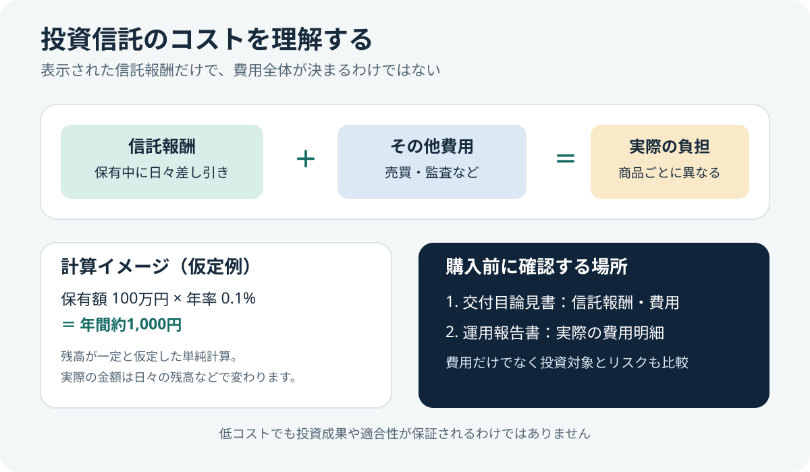
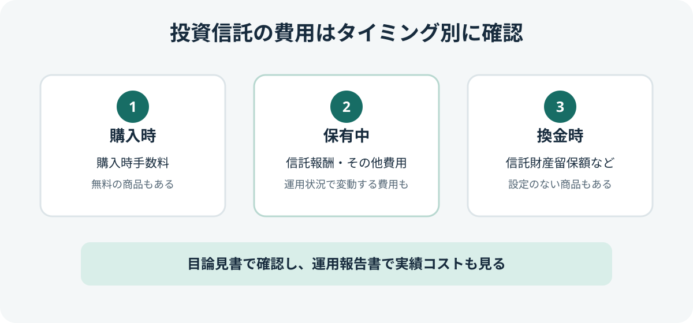

投資信託の信託報酬とは？年率の見方とコスト計算例
信託報酬は、投資信託を保有している間に運用・管理などの対価としてかかる費用です。購入時に別途請求されるとは限らず、通常は信託財産から日々差し引かれます。商品を比較するときは、信託報酬だけでなく投資対象やその他の費用も確認しましょう。

- 信託報酬は保有中に間接的に負担する費用。
- 表示は年率が一般的ですが、実際の負担額は保有額や保有期間などで変わります。
- 信託報酬が低い商品でも、投資対象やリスクが自分に合うとは限りません。
- その他費用を含む実質的な費用は、目論見書や運用報告書で確認します。
1. 信託報酬とは？
信託報酬（運用管理費用）は、投資信託の運用・管理などにかかる費用です。運用会社、販売会社、信託銀行などに支払われ、通常は投資家が毎回請求書を受け取って支払うのではなく、投資信託の信託財産から間接的に差し引かれます。
信託報酬は運用成績が良いか悪いかにかかわらず発生する費用です。費用率や支払先の内訳は、商品ごとの交付目論見書などに記載されています。
2. 年率の数字をどう読む？
信託報酬は「年率○％」などと表示されます。たとえば年率0.2％なら、単純化すると平均保有額100万円に対して1年間で約2,000円相当です。ただし実際の費用は日々の基準価額や保有額などをもとに計算されるため、これは目安の計算です。
| 平均保有額（仮定） | 年率0.1％ | 年率0.5％ | 年率1.0％ |
|---|---|---|---|
| 10万円 | 約100円 | 約500円 | 約1,000円 |
| 100万円 | 約1,000円 | 約5,000円 | 約10,000円 |
| 300万円 | 約3,000円 | 約15,000円 | 約30,000円 |
実際には基準価額が上下し、保有額も変わります。積立投資では投資元本が徐々に増えるため、単純に「最終残高×年率」で実際の費用が決まるわけではありません。
3. 信託報酬以外にも費用がある
投資信託にかかる費用は信託報酬だけではありません。商品によって購入時手数料、換金時の信託財産留保額、監査費用、売買委託手数料、海外資産の保管費用などがかかる場合があります。購入時手数料がかからない「ノーロード」の商品でも、保有中の費用がゼロとは限りません。
| 費用の種類 | 主なタイミング | 確認すること |
|---|---|---|
| 購入時手数料 | 購入時 | 費用の有無と販売会社の条件 |
| 信託報酬 | 保有中 | 年率、税込・税抜、支払先の内訳 |
| その他費用 | 運用中など | 監査費用、売買委託手数料など。事前に料率が確定しないものもある |
| 信託財産留保額 | 購入・換金時など | 設定の有無と適用条件 |

4. 「実質コスト」はどこで確認する？
交付目論見書では、信託報酬や主な費用の仕組みを確認できます。一方、運用中に発生する費用には、事前に正確な金額を示せないものもあります。過去の期間に実際に発生した費用を知りたい場合は、最新の運用報告書（交付運用報告書や全体版）の費用明細を確認しましょう。
投資先の投資信託を通じて運用するファンドでは、投資先ファンドの費用も負担する場合があります。目論見書に「実質的な信託報酬率」などの説明がある場合は、どの費用を含む数値か、計算対象や条件も読みましょう。
5. 信託報酬が低いほど必ずよい？
同じ指数への連動を目指すなど、投資対象や運用方針が近い商品を比較する際、信託報酬は重要な比較項目です。ただし、信託報酬だけを見て商品を選ぶのは避けましょう。
- 投資対象：国内株式、海外株式、債券など、何に投資するか。
- 運用方針：どの指数への連動を目指すか、またはどの方針で運用するか。
- その他費用：信託報酬以外の費用や、ファンド・オブ・ファンズの投資先費用。
- リスク：株価、金利、為替、信用、流動性などの変動要因。
- 運用状況：ベンチマークとの差や運用報告書の内容。比較する期間・対象・費用条件をそろえて確認します。
6. NISA口座でも信託報酬はかかる
NISAは、一定の条件のもとで対象商品の売却益や配当等が非課税になる制度です。非課税制度を利用しても、投資信託の信託報酬などの運用コストが免除されるわけではありません。NISAの対象商品かどうかを確認するとともに、保有中の費用も比較してください。
購入前のチェックリスト
- 交付目論見書で信託報酬の年率と税込・税抜の表示を確認した
- 購入時手数料や信託財産留保額の有無を確認した
- その他費用や実質的な費用の説明を確認した
- 同じ投資対象・運用方針の商品同士で比較した
- コストだけでなくリスクと投資期間も確認した
- 運用報告書の費用明細を確認した
公式情報・参考資料
- 資産運用業協会：投資信託のコスト — 信託報酬やその他の費用の種類
- J-FLEC：信託報酬 — 信託報酬の意味と確認場所
- J-FLEC：投資信託の目論見書を見るポイントは？ — コストやリスクの確認
- 資産運用業協会：運用報告書 — 運用状況と費用の確認方法
- 資産運用業協会：運用管理費用（信託報酬） — 信託報酬の支払先や費用明細
まとめ
信託報酬は投資信託を保有している間に間接的に負担する費用で、長期保有では比較しておきたい項目です。年率だけでなく、その他費用、投資対象、運用方針、リスクもあわせて確認し、自分の目的に合う商品かを判断しましょう。